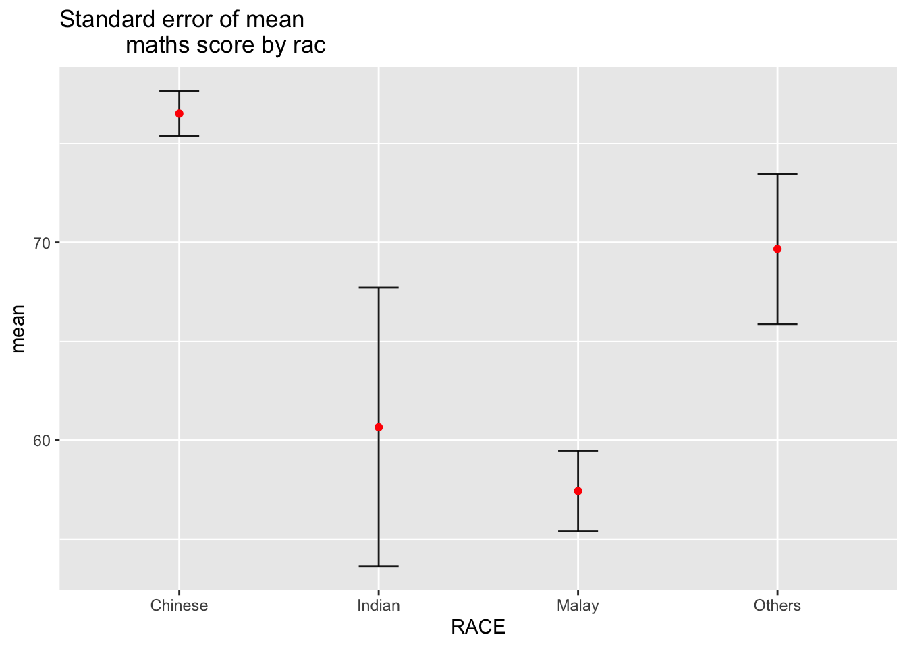
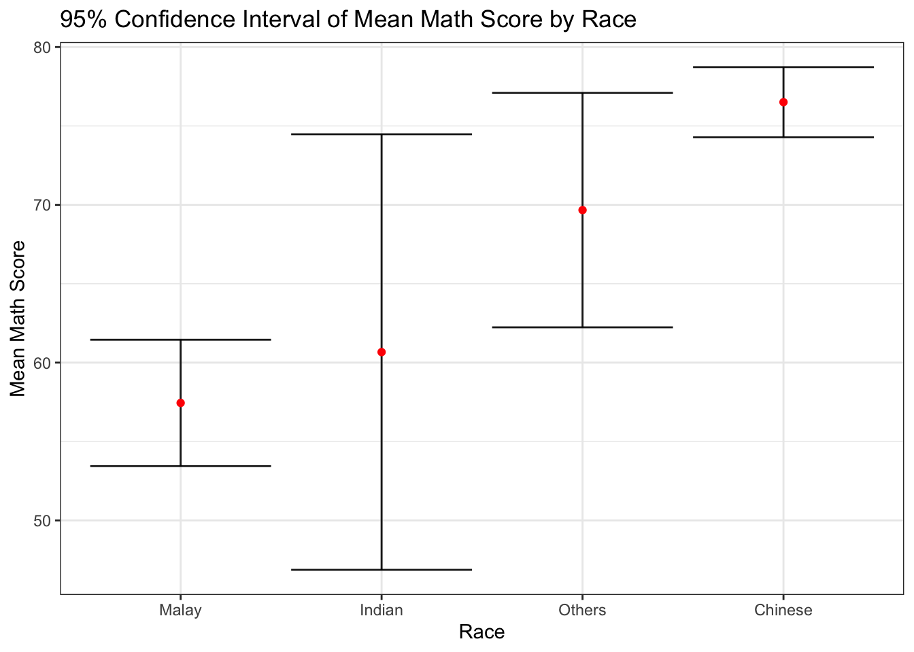
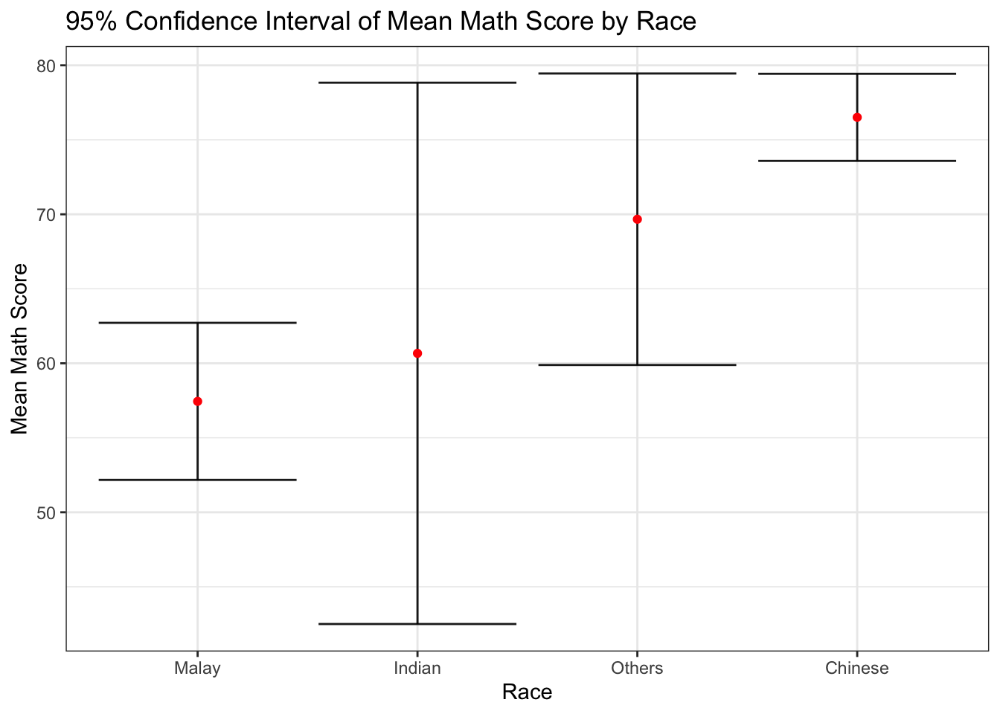
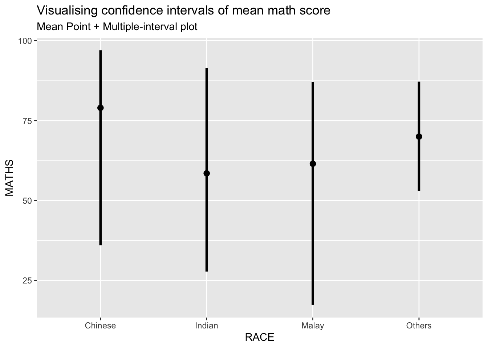
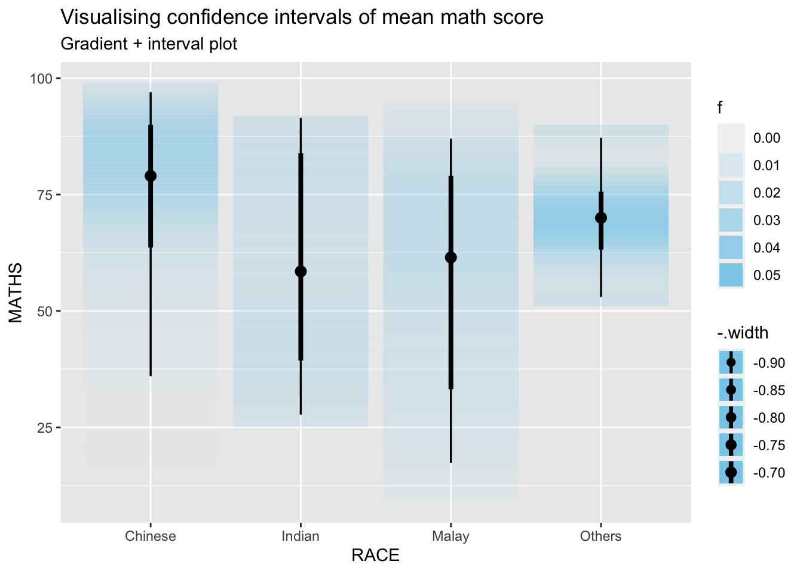
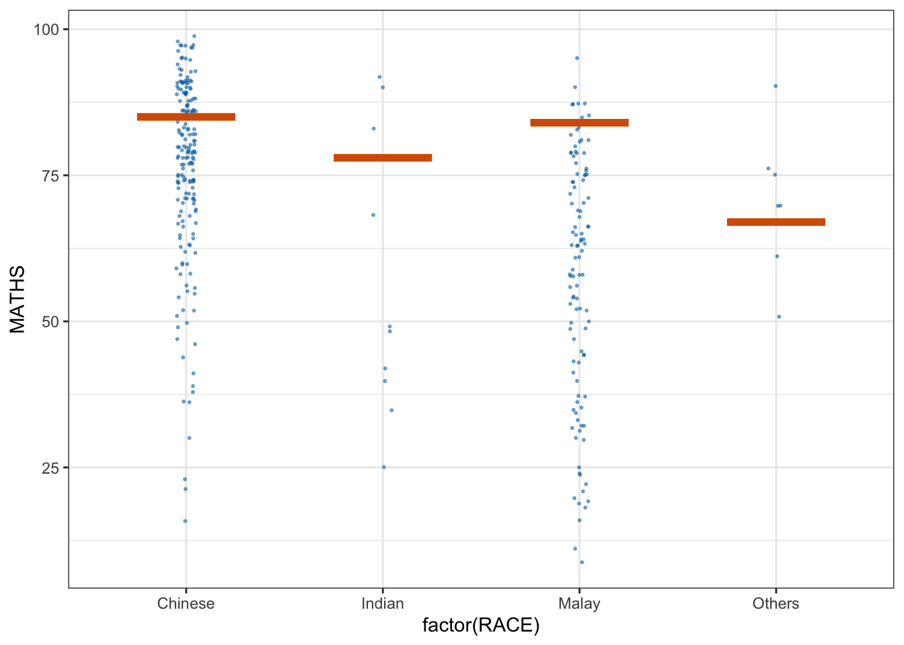
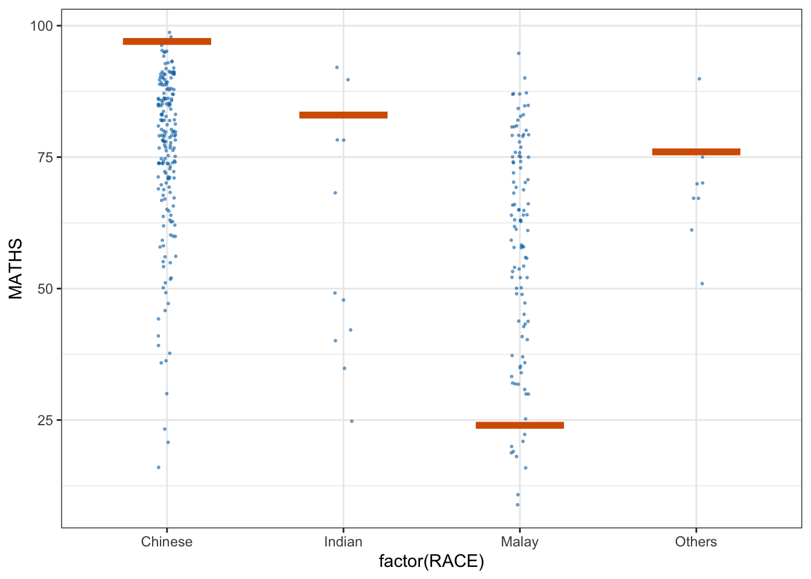

pacman::p_load(tidyverse, plotly, crosstalk, DT, ggdist, gganimate, dplyr, ggplot2)Hands-on Exercise 4.2
Visualising Uncertainty
Visualizing the uncertainty of point estimates
A point estimate is a single number, such as a mean.
Uncertainty is expressed as standard error, confidence interval, or credible interval
Important:
- Don’t confuse the uncertainty of a point estimate with the variation in the sample
exam <- read_csv("data/Exam_data.csv")Visualizing the uncertainty of point estimates: ggplot2 methods
The code chunk below performs the followings:
group the observation by RACE,
computes the count of observations, mean, standard deviation and standard error of Maths by RACE, and
save the output as a tibble data table called
my_sum.
my_sum <- exam %>%
group_by(RACE) %>%
summarise(
n=n(),
mean=mean(MATHS),
sd=sd(MATHS)
) %>%
mutate(se=sd/sqrt(n-1))Next, the code chunk below will
knitr::kable(head(my_sum), format = 'html')| RACE | n | mean | sd | se |
|---|---|---|---|---|
| Chinese | 193 | 76.50777 | 15.69040 | 1.132357 |
| Indian | 12 | 60.66667 | 23.35237 | 7.041005 |
| Malay | 108 | 57.44444 | 21.13478 | 2.043177 |
| Others | 9 | 69.66667 | 10.72381 | 3.791438 |
Visualizing the uncertainty of point estimates: ggplot2 methods
The code chunk below is used to reveal the standard error of mean maths score by race.
ggplot(my_sum) +
geom_errorbar(
aes(x=RACE,
ymin=mean-se,
ymax=mean+se),
width=0.2,
colour="black",
alpha=0.9,
size=0.5) +
geom_point(aes
(x=RACE,
y=mean),
stat="identity",
color="red",
size = 1.5,
alpha=1) +
ggtitle("Standard error of mean
maths score by rac")
Visualizing the uncertainty of point estimates: ggplot2 methods
# calculate the upper and lower bounds of the confidence interval
my_sum <- my_sum %>%
mutate(lower = mean - 1.96 * se, upper = mean + 1.96 * se)
# plot the data with error bars sorted by mean score
ggplot(my_sum, aes(x = mean, y = reorder(RACE, mean), xmin = lower, xmax = upper)) +
geom_errorbar(height = 0.2, colour = "black", alpha = 0.9, size = 0.5) +
geom_point(color = "red", size = 1.5, alpha = 1) +
ggtitle("95% Confidence Interval of Mean Math Score by Race") +
xlab("Mean Math Score") +
ylab("Race") +
coord_flip() +
theme_bw()
Visualizing the uncertainty of point estimates with interactive error bars
# calculate the upper and lower bounds of the confidence interval
my_sum <- my_sum %>%
mutate(lower = mean - 2.58 * se, upper = mean + 2.58 * se)
# plot the data with error bars sorted by mean score
ggplot(my_sum, aes(x = mean, y = reorder(RACE, mean), xmin = lower, xmax = upper)) +
geom_errorbar(height = 0.2, colour = "black", alpha = 0.9, size = 0.5) +
geom_point(color = "red", size = 1.5, alpha = 1) +
ggtitle("95% Confidence Interval of Mean Math Score by Race") +
xlab("Mean Math Score") +
ylab("Race") +
coord_flip() +
theme_bw()
Visualising Uncertainty: ggdist package
ggdist is an R package that provides a flexible set of ggplot2 geoms and stats designed especially for visualising distributions and uncertainty.
It is designed for both frequentist and Bayesian uncertainty visualization, taking the view that uncertainty visualization can be unified through the perspective of distribution visualization:
for frequentist models, one visualises confidence distributions or bootstrap distributions (see vignette(“freq-uncertainty-vis”));
for Bayesian models, one visualises probability distributions (see the tidybayes package, which builds on top of ggdist).

Visualizing the uncertainty of point estimates: ggdist methods
In the code chunk below, stat_pointinterval() of ggdist is used to build a visual for displaying distribution of maths scores by race.
exam %>%
ggplot(aes(x = RACE,
y = MATHS)) +
stat_pointinterval() + #<<
labs(
title = "Visualising confidence intervals of mean math score",
subtitle = "Mean Point + Multiple-interval plot")
exam %>%
ggplot(aes(x = RACE, y = MATHS)) +
stat_pointinterval(.width = 0.95,
.point = median,
.interval = qi) +
labs(
title = "Visualising confidence intervals of mean math score",
subtitle = "Mean Point + Multiple-interval plot")
Visualizing the uncertainty of point estimates: ggdist methods
exam %>%
ggplot(aes(x = RACE,
y = MATHS)) +
stat_pointinterval(
show.legend = FALSE) +
labs(
title = "Visualising confidence intervals of mean math score",
subtitle = "Mean Point + Multiple-interval plot")
Visualizing the uncertainty of point estimates: ggdist methods
In the code chunk below, stat_gradientinterval() of ggdist is used to build a visual for displaying distribution of maths scores by race.
exam %>%
ggplot(aes(x = RACE,
y = MATHS)) +
stat_gradientinterval(
fill = "skyblue",
show.legend = TRUE
) +
labs(
title = "Visualising confidence intervals of mean math score",
subtitle = "Gradient + interval plot")
Visualising Uncertainty with Hypothetical Outcome Plots (HOPs)
Step 1: Installing ungeviz package
devtools::install_github("wilkelab/ungeviz")Step 2: Launch the application in R
library(ungeviz)ggplot(data = exam,
(aes(x = factor(RACE), y = MATHS))) +
geom_point(position = position_jitter(
height = 0.3, width = 0.05),
size = 0.4, color = "#0072B2", alpha = 1/2) +
geom_hpline(data = sampler(25, group = RACE), height = 0.6, color = "#D55E00") +
theme_bw() +
# `.draw` is a generated column indicating the sample draw
transition_states(.draw, 1, 3)
Visualising Uncertainty with Hypothetical Outcome Plots (HOPs)
ggplot(data = exam,
(aes(x = factor(RACE),
y = MATHS))) +
geom_point(position = position_jitter(
height = 0.3,
width = 0.05),
size = 0.4,
color = "#0072B2",
alpha = 1/2) +
geom_hpline(data = sampler(25,
group = RACE),
height = 0.6,
color = "#D55E00") +
theme_bw() +
transition_states(.draw, 1, 3)